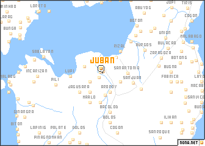

HISTORY

WHEN WAS JUBAN OFFICIALLY A TOWN?
Juban was officially established as a pueblo on April 7, 1799, originally built as a defense against pirate attacks.
HOW JUBAN WAS ESTABLISHED
Juban's roots trace back to the late Spanish colonial era. Originally part of Casiguran, the town emerged from the ashes of Moro raids in the mid-1700s. Settlers found refuge along the Cadac-an River, where they discovered the Milipili tree, a source of resin used for lighting before petroleum was introduced. The practice of extracting sap—called gujub—gave rise to the name Gujuban, later shortened to Juban. By 1817, it was organized as a separate parish, and the 1818 census recorded 396 native families alongside 18 Spanish-Filipino families. The town flourished during the late 19th and early 20th centuries. Juban became a prominent seat for wealthy clans (such as the Grajos, Guevaras, Alindogans, and Gorospes) who built the grand, well-preserved bahay na bato that still line the Maharlika Highway today